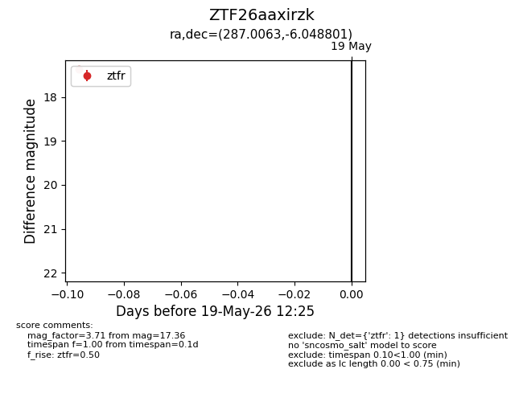
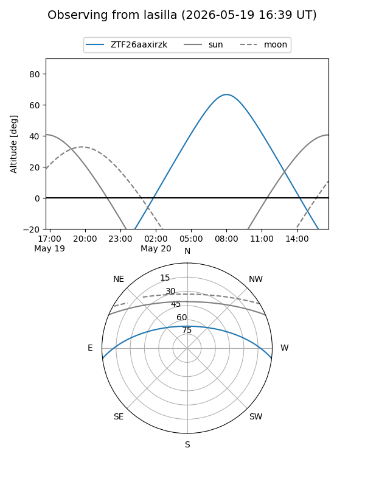
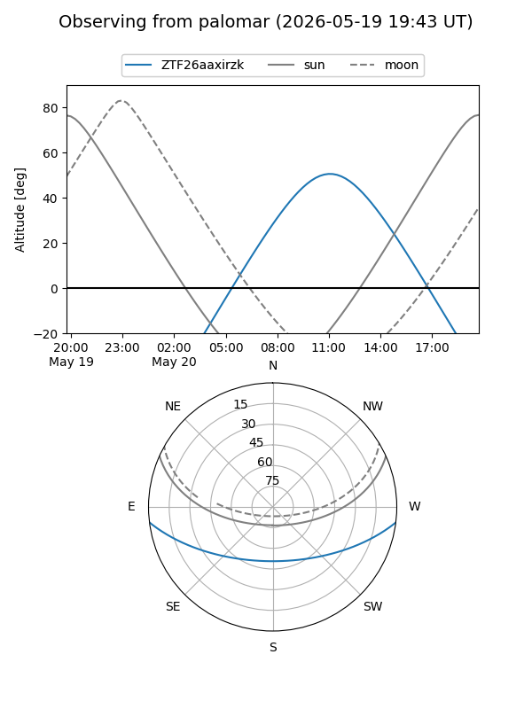

ZTF26aaxirzk
Target ZTF26aaxirzk at 2026-05-19 12:27
Aliases and brokers:
FINK: link
Lasair: link
ALeRCE: link
alt names
ZTF26aaxirzk (ztf,fink_ztf)
Coordinates:
equatorial (ra, dec) = 287.0063,-6.04880
equatorial (HMS+DMS) = 19:08:01.52,-06:02:55.68
galactic (l, b) = (29.4129,-6.43343)
Flags:
Photometry:
last ztfr=17.36
1 ztfr detections
Lightcurve

Visibility


Additional plots